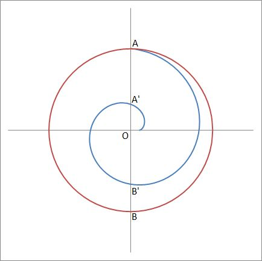
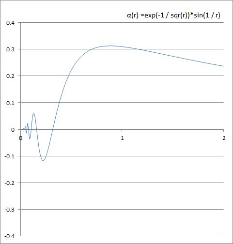
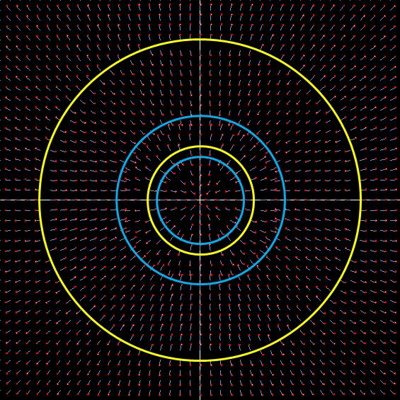
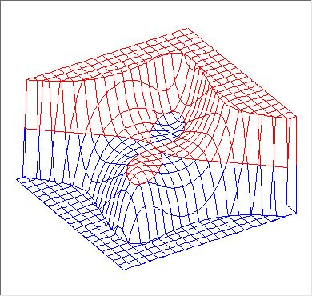
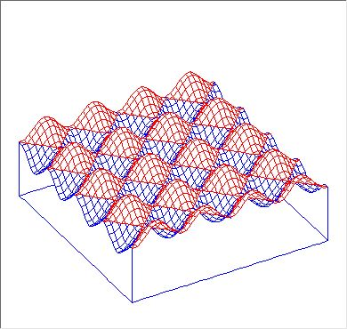

Differential Equations : Plotting Trajectory of Solutions
Simplified Explanation
This tool plots solution curves of 2-dimensional differential equations. Even relatively simple equations can be quite challenging to solve analytically, and sometimes they cannot be solved analytically at all. Therefore, I have created a tool that utilizes the differential equations directly to easily plot approximate solutions on the web. The approximation is primarily performed using the 4th-order Runge-Kutta method, although Euler's method and modified Euler's method are also available options. Initial values are randomly selected in the first quadrant and mirrored across the other three quadrants, resulting in a total of 64 initial points for simultaneous plotting.
The blue lines that appear when plotting starts represent trajectories evolving forward in time from the initial values. After a while, yellow lines will appear, representing trajectories evolving backward in time from the initial values. By observing the movement of these blue and yellow lines, you can gain insights into the properties of the solution curves.
( The drawing page uses Local Storage. Refer to Notes [1] . )
Now, let's provide a brief explanation according to the list displayed in the select box on the drawing page.
The following explanations are based on excerpts from "Mitsuo Morimoto's "Differential Equations by Computer".
\[ \frac{dx}{dt} = ax + by \] \[ \frac{dy}{dt} = cx + dy \]
By setting values in the coefficient input boxes $a, b, c, d$,
various solution curves will be dynamically plotted.
Feel free to try setting the values as given in the examples.
You should see solution curves corresponding to the explanations.
Here, $a, b, c, d$ are real numbers, all of which are assumed to be nonzero, and we introduce a real coefficient 2x2 square matrix $A$.
\[ A = \pmatrix{ a & b \cr c & d \cr } \]
Let $\lambda_1, \lambda_2$ be the eigenvalues of $A$. In the following explanations, the term "line corresponding to the eigenvalue" refers to the eigenspaces of each eigenvalue. For a 2x2 square matrix, eigenspaces generally correspond to lines passing through the origin.
-
When one of the eigenvalues is 0:
e.g.\[ \frac{dx}{dt} = x + y \] \[ \frac{dy}{dt} = 2x + 2y \]\[ A = \pmatrix{ 1 & 1 \cr 2 & 2 \cr } \]
If $\lambda_1 = 0$ and $\lambda_2 = 3 > 0$, the solution curves are half-lines parallel to the line $y = 2x$ corresponding to $\lambda_2$, emanating from points on the line $y = -x$ corresponding to $\lambda_1$, extending to infinity.
If $\lambda_1 = 0$ and $\lambda_2 < 0$, the direction of the solution curves reverses.
-
When the eigenvalues are $\lambda_1 < 0 < \lambda_2$ (saddle point):
e.g.\[ \frac{dx}{dt} = -2x + 2y \] \[ \frac{dy}{dt} = -2x + 3y \]\[ A = \pmatrix{ -2 & 2 \cr -2 & 3 \cr } \]
Given $\lambda_1 = -1 < 0$ and $\lambda_2 = 2 > 0$, the solution curves emanate from infinity along the line $y = 2x$ corresponding to $\lambda_2$, are attracted towards the origin, then change direction along the line $2y = x$ corresponding to $\lambda_1$, and head towards infinity again.
-
When $0 < \lambda_1 < \lambda_2$ (unstable node or source):
e.g.\[ \frac{dx}{dt} = x \] \[ \frac{dy}{dt} = 2y \]\[ A = \pmatrix{ 1 & 0 \cr 0 & 2 \cr } \]
Given $\lambda_1 = 1 > 0$ and $\lambda_2 = 2 > 0$, the solution curves emanate from the origin along the line $y = 0$ (x-axis) corresponding to $\lambda_1$ and head towards infinity along the line x = 0 (y-axis) corresponding to $\lambda_2$.
-
When $0 < \lambda_1 < \lambda_2$ (unstable node or source) 2:
e.g.\[ \frac{dx}{dt} = x \] \[ \frac{dy}{dt} = 3x + 2y \]\[ A = \pmatrix{ 1 & 0 \cr 3 & 2 \cr } \]
Given $\lambda_1 = 1 > 0$ and $\lambda_2 = 2 > 0$, the solution curves emanate from the origin along the line $y = -3x$ corresponding to $\lambda_1$ and head towards infinity along the line x = 0 (y-axis) corresponding to $\lambda_2$.
-
When $ \lambda_1 < \lambda_2 < 0$ (stable node or sink):
e.g.\[ \frac{dx}{dt} = -4x - 3y \] \[ \frac{dy}{dt} = 2x -11y \]\[ A = \pmatrix{ -4 & -3 \cr 2 & -11 \cr } \]
Given $\lambda_1 = -10 < 0$ and $\lambda_2 = -5 < 0$, the solution curves emanate from infinity along the line $y = 2x$ corresponding to $\lambda_1$ and converge towards the origin along the line $3y = x$ corresponding to $\lambda_2$.
-
When the eigenvalue $\lambda$ is repeated, and matrix $A$ is diagonalizable:
If $\lambda > 0$, it becomes an unstable degenerate node or degenerate source.e.g.\[ \frac{dx}{dt} = 2x \] \[ \frac{dy}{dt} = 2y \]\[ A = \pmatrix{ 2 & 0 \cr 0 & 2 \cr } \]
Given $\lambda_1 = \lambda_2 = 2 < 0 $, the solution curves emanate from the origin and extend to infinity, forming a half-line.
When $\lambda < 0$, the solution curves emanate from infinity and converge towards the origin, forming a half-line (stable degenerate node or degenerate sink).
-
When the eigenvalue $\lambda$ is repeated, and matrix $A$ is not diagonalizable:
If $\lambda > 0$, it becomes an unstable degenerate node or degenerate source.e.g.\[ \frac{dx}{dt} = 2x + y \] \[ \frac{dy}{dt} = 2y \]\[ A = \pmatrix{ 2 & 1 \cr 0 & 2 \cr } \]
Although the eigenvalue is repeated with $\lambda = 2$, matrix $A$ cannot be diagonalized. The solution curves emanate from the origin and extend towards infinity along the $y = 0$ (x-axis), forming a stable degenerate node or degenerate sink.
If $\lambda < 0$, the solution curves emanate from infinity and converge towards the origin along the line corresponding to the eigenvalue lambda. (Stable degenerate node or degenerate sink).
-
When the eigenvalues are purely imaginary (center):
e.g.\[ \frac{dx}{dt} = x + 2y \] \[ \frac{dy}{dt} = -x - y \]\[ A = \pmatrix{ 1 & 2 \cr -1 & -1 \cr } \]
The eigenvalues are $\lambda = \pm i$. The solution curves depict elliptical orbits centered at the origin (periodic solutions).
-
When the eigenvalues have both real and imaginary parts (spiral point):
e.g.\[ \frac{dx}{dt} = -x - y \] \[ \frac{dy}{dt} = 2x - y \]\[ A = \pmatrix{ -1 & -1 \cr 2 & -1 \cr } \]
The eigenvalues are $\lambda = -1 \pm \sqrt{2}i$. When the real part of the eigenvalues is negative, the solution curves emanate from infinity, spiral around the origin, and converge towards it, forming a stable spiral point.
When the real part of the eigenvalues is positive, the solution curves spiral around the origin, and extending towards infinity, representing an unstable vortex point.
\[ \frac{dx}{dt} = ax^2 + bxy + cy^2 \] \[ \frac{dy}{dt} = dx^2 + exy + fy^2 \]
By setting values in the coefficient input boxes $a, b, c, d, e, f$ ,
various solution curves will be dynamically plotted.
Here, $a, b, c, d, e, f$ are real numbers, all of which are assumed to be nonzero.
In Morimoto's book, analytical solutions are presented, and the properties of solution curves are explained in detail. However, please note that the explanations provided here are considerably condensed.
-
Node-Saddle Point Type:
e.g.\[ \frac{dx}{dt} = x^2 \] \[ \frac{dy}{dt} = 2(x - y)^2 \]\[ \frac{dx}{dt} = 1 \cdot x^2 + 0 \cdot xy + 0 \cdot y^2 \] \[ \frac{dy}{dt} = 2 \cdot x^2 - 4 \cdot xy + 2 \cdot y^2 \] The coefficients are as follows
$ a = 1, \, b = 0, \, c = 0 $
$ d = 2, \, e = -4, \, f = 2 $
The lines $2y = x$ and $x = 0$ (y-axis) form two hyperbolic sectors. There are also four parabolic sectors along the line $y = 2x$, where the solution curves approach the origin, sandwiched by this line. The parabolic sectors in the first quadrant are unstable, while those in the third quadrant are stable.
-
Degenerate Node-Saddle Point Type:
e.g.\[ \frac{dx}{dt} = 4x^2 \] \[ \frac{dy}{dt} = x^2 + 4y^2 \]\[ \frac{dx}{dt} = 4 \cdot x^2 + 0 \cdot xy + 0 \cdot y^2 \] \[ \frac{dy}{dt} = 2 \cdot x^2 + 0 \cdot xy + 4 \cdot y^2 \] The coefficients are as follows
$ a = 4, \, b = 0, \, c = 0 $
$ d = 1, \, e = 0, \, f = 4 $
The lines $2y = x$ and $x = 0$ (y-axis) form two hyperbolic sectors. Additionally, there are two parabolic sectors along the line $2y = x$. The parabolic sector in the first quadrant is unstable, while that in the third quadrant is stable.
-
Double Elliptic Type:
e.g.
\[ \frac{dx}{dt} = -x^2 + y^2 \] \[ \frac{dy}{dt} = -2xy \]
\[ \frac{dx}{dt} = -1 \cdot x^2 + 0 \cdot xy + 1 \cdot y^2 \] \[ \frac{dy}{dt} = 0 \cdot x^2 - 2 \cdot xy + 0 \cdot y^2 \] The coefficients are as follows
$ a = -1, \, b = 0, \, c = 1 $
$ d = 0, \, e = -2, \, f = 0 $
The line $y = 0$ (x-axis) divides the plane into two elliptic sectors. Solution trajectories start at the origin, form circular arcs tangent to the x-axis, and converge towards the origin.
-
Triple Crossing Type:
e.g.
\[ \frac{dx}{dt} = x^2 - y^2 \] \[ \frac{dy}{dt} = -2xy \]
\[ \frac{dx}{dt} = 1 \cdot x^2 + 0 \cdot xy - 1 \cdot y^2 \] \[ \frac{dy}{dt} = 0 \cdot x^2 - 2 \cdot xy + 0 \cdot y^2 \] The coefficients are as follows
$ a = 1, \, b = 0, \, c = -1 $
$ d = 0, \, e = -2, \, f = 0 $
Compared to the previous double elliptic type, the equations this time only differ in the signs of $x^2$ and $y^2$, yet the solution curves completely change.
The solution curves form three ridges and valleys combined, resembling a three-peaked mountain landscape. Three lines divide the plane into six hyperbolic sectors. -
Node Type 2:
e.g.
\[ \frac{dx}{dt} = -x^2 \] \[ \frac{dy}{dt} = y^2 \]\[ \frac{dx}{dt} = 1 \cdot x^2 + 0 \cdot xy + 0 \cdot y^2 \] \[ \frac{dy}{dt} = 0 \cdot x^2 + 0 \cdot xy + 1 \cdot y^2 \] The coefficients are as follows
$ a = 1, \, b = 0, \, c = 0 $
$ d = 0, \, e = 0, \, f = 1 $
The lines $y = 0 $ (x-axis) and $x = 0$ (y-axis) form two hyperbolic sectors. There are also four parabolic sectors along the line $y = -x$, where the solution curves approach the origin, sandwiched by this line. The parabolic sector in the second quadrant is unstable, while that in the fourth quadrant is stable.
-
Parabolic Type:
e.g.
\[ \frac{dx}{dt} = -x^2 \] \[ \frac{dy}{dt} = y^2 \]\[ \frac{dx}{dt} = -1 \cdot x^2 + 0 \cdot xy + 0 \cdot y^2 \] \[ \frac{dy}{dt} = 0 \cdot x^2 + 0 \cdot xy + 1 \cdot y^2 \] The coefficients are as follows
$ a = -1, \, b = 0, \, c = 0 $
$ d = 0, \, e = 0, \, f = 1 $
The line $y = -x$ divides the plane into two parabolic sectors. The line $y = 0$ (x-axis) divides the plane into two elliptic sectors. Solution trajectories reverse direction across this line.
From high-order autonomous systems onwards, coefficients cannot be inputted.
I believe you can understand the circumstances.
Eventually, I would like to create a page where users can define equations freely and
plot their solution curves on the web, but it seems to be a distant plan for now.
For the time being, I would like to introduce equations mentioned in Mr. Morimoto's book.
-
Homogeneous autonomous system with periodic solution:
e.g.\[ \frac{dx}{dt} = -y^3 \] \[ \frac{dy}{dt} = x^3 \] -
Homogeneous Autonomous System with Eight Parabolic Sectors:
e.g.\[ \frac{dx}{dt} = x^3 \] \[ \frac{dy}{dt} = y^3 \]The plane is divided into eight parabolic sectors by the lines $y = \pm x$ and the $x$ and $y$ axes.
-
Homogeneous Autonomous System with Compound Sectors:
e.g.\[ \frac{dx}{dt} = x^2(y - x) \] \[ \frac{dy}{dt} = y^2(y - 2x) \]The plane is divided into eight sectors by the lines $2y = (3 \pm \sqrt{5})x$ and the $x$ and $y$ axes. It consists of two hyperbolic sectors, two elliptic sectors, and four parabolic sectors.
-
Vinograd's Autonomous System:
e.g.\[ \frac{dx}{dt} = x^2(y - x) + y^5 \] \[ \frac{dy}{dt} = y^2(y - 2x) \]This is similar to the previous compound sector form, with the addition of $y^5$ on the right side of $dx/dt$. However, symmetrical elliptic sector patterns reminiscent of "The Scream" by Edvard Munch appear, with $y = 0$ (x-axis) as the dividing line.
- [01] Autonomous system with periodic equilibrium points on x-axis
- [02] Autonomous system with 8 equilibrium points on the circumference
- [03] Autonomous system with periodic equilibrium points on a plane
- [04] Limit Cycle 1 Case of the solution orbit is a limit circle
- [05] Limit Cycle 2 von del Pol's Autonomous System
- [06] Limit Cycle 3 Lemniscate
- [07] Limit Cycle 4 Linear approximation with purely imaginary numbers - 1
- [08] Limit Cycle 5 Linear approximation with purely imaginary numbers - 2
- [09] Hamilton system 1 Cassini oval
- [10] Hamilton system 2 folium of Descartes
- [11] Hamilton system 3 derivatives of "folium of Descartes"
- [12] Hamilton system 4 Case of the periodicity of trigonometric functions is reflected
-
Autonomous system with periodic equilibrium points on x-axis:
e.g.\[ \frac{dx}{dt} = y \] \[ \frac{dy}{dt} = \sin x + y^2 \]This autonomous system has the following equilibrium points:
$(p\pi, 0) \quad p = \pm1, \pm2, \ldots $
When $p$ is even, it becomes a saddle point, and when it's odd, it becomes a focus point. Overall, the solution curve resembles fish arranged in a row. The odd focus points become the eyes of the fish, and the even saddle points become the tails.I'll significantly condense Morimoto's detailed explanation. When $p$ is even, for example when $p = 0, \; \sin x$ can be $approximated$ as $x$ in the vicinity of $x = 0$. Additionally, if $y^2$ is sufficiently smaller than $x$, the equations can be expressed as follows: \[ \frac{dx}{dt} = y \] \[ \frac{dy}{dt} = x \] This is called a linear approximation. The eigenvalues of the corresponding 2x2 square matrix for this equation become $\pm 1$ , so the equilibrium points become saddle points. Refer to [01] - 2
When $p$ is odd, for example when $p = \pi$, $\sin x$ can be approximated as $-(x - \pi)$ in the vicinity of $x = 0$. Additionally, if $x^2$ is sufficiently smaller than $x - \pi$, the equations can be expressed as follows: \[ \frac{dx}{dt} = y \] \[ \frac{dy}{dt} = -(x - \pi) \] If we take $x - \pi$ and $−y$ as new coordinates: \[ \frac{dx}{dt} = -y \] \[ \frac{dy}{dt} = x \] The eigenvalues of the corresponding 2x2 square matrix become $\pm i$, so the equilibrium points become focus points. Refer to [01] - 8
The above approximation holds near each equilibrium point, and as one moves away, the influence of the terms omitted in the original equation becomes evident, resulting in trajectories that resemble fish aligned in a row.
-
Autonomous system with 8 equilibrium points on the circumference:
e.g.\[ \frac{dx}{dt} = x^2y^2 - 1 \] \[ \frac{dy}{dt} = x^2 + y^2 - a \]This autonomous system has 8 equilibrium points on the circumference $x^2 + y^2 = a$. There are 2 in each quadrant, totaling 8. Originally, a fixed value of 4 was assigned to the parameter a, but now it's made variable. Please verify what kind of trajectories are drawn by changing the value of $a$, Since the positions of equilibrium points might be a bit confusing, a circle is displayed at the end of the plot. The default plot range is 8, but if you set it to 16 or 32, although the trajectories become rough due to random initial values, the equilibrium points should be easier to confirm.
-
Autonomous system with periodic equilibrium points on a plane:
e.g.\[ \frac{dx}{dt} = \cos x + \cos y \] \[ \frac{dy}{dt} = \sin x \sin y \]This autonomous system has equilibrium points at
$ \pmatrix{ 2p\pi \cr (2q + 1)\pi \cr } $ and $ \pmatrix{ (2p + 1)\pi \cr 2q\pi \cr }, \;\; $where $p$ and $q$ are integers.Similar to 4-1, performing a first-order approximation near equilibrium points, the first type of equilibrium points becomes elliptical, and the second type becomes trisectrix. This repeats on the plane.
-
Limit Cycle: example 1
Case of the solution orbit is a limit circlee.g.\[ \frac{dx}{dt} = ay + ax(1 - x^2 - y^2) \] \[ \frac{dy}{dt} = cx + dy(1 - x^2 - y^2) \]The parameters $ a, b, c, d $ are given the following values:
$ a = 1, \, b = 1, \, c = -1 , \, d = 1 $
The concept of a limit cycle was introduced by Poincaré. In this example, the limit cycle becomes $x^2 + y^2 = 1$ , forming a limit circle. Regardless of whether the initial values are inside or outside the circle, they spiral around it. This limit cycle (limit circle) can be considered stable.
Although Morimoto has provided a fairly detailed explanation about the limit circle, I myself have not reached a state of understanding. Morimoto recommends referring to "Kasahara Koji's Fundamentals of Differential Equations" for further understanding.
Now, try setting the parameters $ a, b, c, d $ to the following values. The appearance of the solution trajectories will drastically change.
$ a = -1, \, b = -1, \, c = 1 , \, d = -1 $
Once again, the limit cycle becomes $x^2 + y^2 = 1$ , but the solution trajectories inside the circle spiral toward the origin, while those outside the circle spiral away from the circle towards infinity. Therefore, the limit cycle (limit circle) is unstable.
For information about the limit cycle, please refer to the following site. A detailed explanation is provided, including the upcoming "von del Pol's autonomous system".
1. Limit cycle
When searching for "Poincaré limit circle etc.", you will notice a deep connection with the famous Escher, known for his optical illusions.
Although this involves geometric considerations, what's involved and how...it's chaos.
-
Limit Cycle: example 2 von del Pol's Autonomous System
e.g.\[ \frac{dx}{dt} = y \] \[ \frac{dy}{dt} = -x + ay(1 - x^2) \]By default, the parameter $a$ is set to 1.
While von del Pol's equations are introduced in various sites, "[04] - 4" referenced in Limit cycle is quite understandable.
The limit cycle appears as a distorted quadrilateral rather than a circle, but this equation also possesses the properties of a limit circle. If you decrease the parameter $a$ to 0.9, 0.8..., and execute the plot, you'll notice it gradually approaches a circle. The solution trajectories in this case are also stable.When $a = 0$, the origin becomes a focus, as described in the 2D linear autonomous system introduced in "[01] - 8". Furthermore, what happens when $a$ becomes negative? Please confirm!
-
Limit Cycle: example 3 Lemniscate
e.g.\[ \frac{dx}{dt} = a * y(1 + 2x^2 + 2y^2) \] \[ \frac{dy}{dt} = b * x(1 - 2x^2 - 2y^2) + c * y(1 + 2x^2 + 2y^2)((x^2 + y^2)^2 - (x^2 - y^2)) \]By default, the parameters a, b are set to 1, and c is set to -1.
This autonomous system has three equilibrium points: the origin (saddle point) and two stable vortices ($ \pm 1 / \sqrt{2}, 0 $).
There are three limit cycles on the curve called Lemniscate $ (x^2 + y^2)^2 - (x^2 - y^2) = 0 $ . The origin serves as an equilibrium point, and the sections where $x < 0$ and $x > 0$ become solution trajectories of the equation. According to Mr. Morimoto, these are not the limit circles. This seems to be because two limit cycles are connected. The limit cycles themselves are stable.
What happens when $a = -1, b = -1, c = 1$ ? Please confirm!
What about when $a = -1, b = 1, c = -1$?
The three equilibrium points change to the origin (vortex) and two saddle points ($ \pm 1 / \sqrt{2}, 0 $). It ceases to be a Lemniscate, and a trajectory resembling the human eye appears around the origin. For $a = 1, b = -1, c = 1$, the direction of the trajectory is reversed. In both cases, although I have plotted and observed repeatedly, -
Limit Cycle: example 4 Linear approximation with purely imaginary numbers - 1
Case of no limit circle existse.g.\[ \frac{dx}{dt} = y \] \[ \frac{dy}{dt} = -x - y^3 \]The equilibrium point of this autonomous system is only at the origin.
When linearized at the origin( linear approximation )the equation becomes as follows.
\[ \frac{dx}{dt} = y \] \[ \frac{dy}{dt} = -x \]
The eigenvalues are $\lambda = \pm i$ , and the solution trajectory becomes a spiral point as seen in [1] - 8.
However, when plotting the solution trajectory of the original nonlinear equation, a trajectory resembling a vortex point appears rather than a spiral point.
Morimoto's explanation of this trajectory, it is as follows:
Let A and B be the y-intercepts of a circle with radius $r$ centered at the origin. Since a vector $ \pmatrix{ y \cr -x - y^3 \cr } $ at each point on this circle is the sum of a vector tangent to the circle $ \pmatrix{ y \cr -x \cr } $ and a vector pointing inward to the circle $ \pmatrix{ 0 \cr -y^3 \cr } $ , it points inward to the circle.
The solution trajectory passing through point A on the y-axis goes closer into the circle than A and crosses B', which is closer to the origin than point B on the y-axis.
If we replace the same argument with point B' on the y-axis, the solution trajectory passing through B' goes further into the circle than B' and crosses point A' on the y-axis.
Thus, the solution trajectory passing through A spirals around the origin and converges to the origin without closing.
However, near the origin, the movement of the trajectory becomes sluggish, and one must reduce the "step size" and increase the "iterations" to ensure that the trajectory is plotted correctly, so caution is advised during verification.
-
Limit Cycle: example 5 Linear approximation with purely imaginary numbers - 2
case : an infinite number of limit circles appeare.g.\[ \frac{dx}{dt} = -y + 10x \, e^{(-1 / \sqrt{r})} \sin(1 / r)\] \[ \frac{dy}{dt} = x + 10y \, e^{(-1 / \sqrt{r})} \sin(1 / r)\] $\qquad$ where $\; r = \sqrt{x^2 + y^2} $$r$ represents the distance from the origin. Let's denote this equation as (4. 8. a).
\[ \alpha(r) = \cases{ e^{(-1 / \sqrt{r})} \sin(1 / r) & ($r > 0$) \cr 0 & ($r = 0$) \cr } \]
The function defined by $\alpha(r)$ repeats damped oscillations as it approaches the origin.

Although the attached figure is rough and difficult to understand, by decreasing the step size of $r$ and extending the figure, it can be inferred that it is a fractal.
Focus on the position where $\alpha(r) = 0$ (the graph intersects the x-axis). As will be touched upon later, the coordinates of the intersection points continue towards the origin from the right as $1 / \pi,\, 1 / 2\pi,\, 1 / 3\pi,\, 1 / 4\pi,\, 1 / 5\pi,\,$ and so on.
Between $1 / \pi$ and $1 / 2\pi, \alpha(r) < 0$
Between $1 / 2\pi$ and $1 / 3\pi, \alpha(r) > 0$
Between $1 / 3\pi$ and $1 / 4\pi, \alpha(r) < 0$
Between $1 / 4\pi$ and $1 / 5\pi, \alpha(r) > 0$
...When $\alpha(r) = 0$, the equation (8. 4. a) becomes equal to the linear autonomous system
\[ \frac{dx}{dt} = -y \] \[ \frac{dy}{dt} = x \]
since the second term on the right side disappears respectively. Let's denote this equation as (8. 4. b).The eigenvalues are lambda = +/- i, and the solution trajectory becomes a spiral point as seen in [1] - 8.
Therefore, on the circumference with radius $r = 1 / k\pi$ (assume that $k$ is a natural number) centered at the origin in equation (4. 8. a), the closed solution trajectory (limit circle) coincides with the linearized equation (4. 8. b).
Since $k$ is a natural number, there are infinitely many closed solution trajectories, but the trajectories appear inside the circumference of radius $1 / \pi$.
Now, what happens to the solution trajectory of equation (8. 4. a) when the initial v alues are not on the circumference $1 / k\pi$ ? Removing the first term on the right side of equation (8. 4. a) results in equation (8. 4. c) denoted as follows:
\[ \frac{dx}{dt} = 10x \, e^{(-1 / \sqrt{r})} \sin(1 / r)\] \[ \frac{dy}{dt} = 10y \, e^{(-1 / \sqrt{r})} \sin(1 / r)\] $\qquad$ where $\; r = \sqrt{x^2 + y^2} $
Removing the exponential part from (8. 4. c) makes it a linear autonomous system as seen in [1] - 6, extending radially from the origin. So, what kind of trajectory does (8. 4. c) itself become?
The vector field of (8. 4. c) is expressed as follows:

The graph of the vector field substitutes red dots for the direction of each line segment instead of arrows. Although the vectors are radial, it can be confirmed that the direction changes across the circumference where $\alpha(r) = 0$, at $r = 1 / k\pi$. Taking the outermost yellow circumference as an example, each point (denoted as M) outside the circumference radiates away from the origin. Each point (denoted as N) from the yellow circumference to the inner blue circumference radiates towards the origin.
Returning to equation (8. 4. a), the vector at point M outside the yellow circumference is the sum of a vector along the circle with radius equal to the distance from the origin to point M and a vector radiating away from the origin. The solution trajectory becomes a path that moves away while following the circumference.
On the other hand, the vector at point N between the yellow circumference and the adjacent inner blue circumference is the sum of a vector along the circule with radius equal to the distance from the origin to point N and a vector radiating towards the origin. The solution trajectory follows along the blue circumference and eventually winds around it.
Furthermore, for each point from the blue circumference to the inner yellow circumference, the vector is the sum of a vector along the circle with radius equal to the distance from the origin to it's point and a vector radiating outward. Therefore, the solution trajectory becomes a path that initially moves along the blue circumference, eventually winding around it.As the origin is approached, the circumference $1 / k\pi$ appears infinitely, but due to the repetition of the explanation above, when $k$ is odd, the limit circle becomes unstable, whereas when $k$ is even, it comes stable.
-
Hamilton system 1 Cassini oval
e.g.\[ \frac{dx}{dt} = y(1 + x^2 + y^2)\] \[ \frac{dy}{dt} = x(1 - x^2 - y^2)\]The Hamiltonian equations have the following characteristics:
\[ \frac{dx}{dt} = F_y(x, y)\] \[ \frac{dy}{dt} = -F_x(x, y)\] \[ The analytical solution becomes the implicit function as follows: \] \[ F(x, y) = C\]
Since the analytical solution becomes an implicit function, it is relatively difficult to draw the general solution. While one method involves using parametric variables for drawing, to plot without modifying the implicit functions leads to a cumbersome process. A simpler approach might involve dividing the drawing area into a grid and approximating the graph by plotting while checking if the implicit function intersects with the four sides of each grid.
The solution trajectory of a differential equation is to plot a family of curves of analytical solutions. In the case of the Hamilton type, the graph of the implicit function is drawn directly.
The analytical solution of Cassini oval is as follows:
\[ F(x, y) = \frac{1}{4}(1 + x^2 + y^2)^2 - x^2 = C\]
The equilibrium points are the origin and the points $(\pm1, 0)$. The origin becomes a saddle point, and $(\pm1, 0)$ become center.
When plotted, it is confirmed that all solution trajectories are periodic. The graph of implicit function can be confirmed that it matches Cassini oval.
When the constant on the right side of the analytical solution is 0.25, it becomes Lemniscate. This is markedly different from what was previously introduced in [4] - 6, where the general solution of the Lemniscate was shown to be a limit cycle.
-
Hamilton system 2 folium of Descartes
e.g.\[ \frac{dx}{dt} = 2x - 3y^2\] \[ \frac{dy}{dt} = -2y + 3x^2\]The analytical solution is as follows:
\[ F(x, y) = -x^3 + 2xy - y^3 = C\]
The equilibrium points are the origin and the point $(2/3, 2/3)$. The origin becomes a saddle point, and $(2/3, 2/3)$ becomes a center.
When the constant is 0 in the graph of the implicit function, folium of Descartes is plotted.
-
Hamilton system 3 derivatives of "folium of Descartes"
e.g.\[ \frac{dx}{dt} = 2x - 3y^2\] \[ \frac{dy}{dt} = -2y + 3x^2\]The analytical solution is as follows:
\[ F(x, y) = -x^5 + 2x^2y - y^5 = C\]
The equilibrium points are the origin and the points in the first and third quadrants (each in a point-symmetric relationship). The origin becomes a saddle point, and the points in the first and third quadrants become centers.
When the constant is 0 in the graph of the implicit function, a curve resembling a combination of two "folium of Descartes" is plotted.
To confirm, draw the graph of the surface $F(x, y)$ as shown below. You can see that the graph of the implicit function is contour lines of a curved surface.

-
Hamilton system 4 Case of the periodicity of trigonometric functions is reflected
e.g.\[ \frac{dx}{dt} = \sin(y)\] \[ \frac{dy}{dt} = \sin(x)\]The analytical solution is as follows:
\[ F(x, y) = \cos(y) - \cos(x) = C\]
The equilibrium points are $(p\pi, q\pi)$, where $p, q$ are integers. When $p + q$ is even, it becomes a saddle point, and when it's odd, it becomes a center.
From the graph of the implicit function it shows that when $p + q$ is odd and $p$ is odd, it forms convex contours, and when $p$ is even, it forms concave contours.
To confirm, draw the graph of the surface $F(x, y)$ as shown below. Doesn't it resemble something you might see in a kitchen?

[99] User defined Equations
When you click [to Plot], the following screen will be displayed. You can enter any equation and check its solution trajectory. When you press the [START] button, the equations you entered will be displayed in TeX format below the input box, and the drawing will begin. The evaluation of the entered equations uses Math.js . If you get an error message, please check and correct the entered equations as necessary. The equations that can be entered are limited to autonomous systems (non-autonomous systems are currently under review).
Below are some input examples.
-
Example of a 2-dimensional first-order linear autonomous system.
-
Example when there is no need to form a system of equations. Let $dx/dt$ be 1 .
-
Various inputs are possible for powers, but for simplicity, x^2 is sufficient. Of course, x*x is also fine. For squares, x*x is fine, but for higher powers like fourth or fifth, it's easier to input as x^4, etc.
You can also use pow(). When pow(x^2 + y^2, 2) is displayed in TeX, it appears as $(x^2 + y^2)^2$ without any issues, but if you input pow(x, 5), it will display as $(y)^5$. The calculation itself will be correct, so there is no problem, but if it feels awkward, simply input y^5. -
If the equation becomes long, you can input it as shown below (however, if it is excessively long, the layout of the screen may be disrupted. Although this will not affect the calculation, it will be very difficult to read). Also, if a part of the equation is repeated, you can input the repeated part in the where, $r = $ and replace the repeated part in the equation with r to save input effort.
If not needed, there is no need to input anything like in examples 1 to 3. -
Since math.js is used to parse the entered formulas, mathematical functions such as sin(), cos(), and pow() can be entered as they are.
Conversely, if a formula including math.pow(), math.sin(), math.cos(), etc., is entered in the input box, it will result in an error, and the drawing will not be executed.
For exponents, e^x is evaluated as $e^x$. If you input exp(x), it will be displayed as $\exp(x)$ in TeX, but it will be evaluated in the same way. If the exponent is complex, please use parentheses, like e^(x + 1) or exp(x + 1).
[1.]
This page has the ability to use Local Storage to retain the position of the list selected in a select box. As there are a considerable number of selectable items, it would be a pain to have to traverse from the top list to the desired list each time when the browser's refresh button is pressed or when the page is closed and then reopened.
So I've added a checkbox to preserve the position of the selected list, as shown below.
If you check the box and then select a specific item, the check box status and the selected list number will be saved in Local Storage.
However, if you uncheck this box, the data stored in the Local Storage will be deleted along with the key, so if you press the browser's refresh button or close and reopen the page, the top of the list will return to being selected.
The data (key, vakue) stored in Local Storage is the following two items:
| key | value |
|---|---|
| kzDeq_StorageFlg | "true" or "false" |
| kzDeq_SelectedType | "a five-character string, such as "09&09" |
You can check the data stored in Local Storage from the settings screen of your browser. return